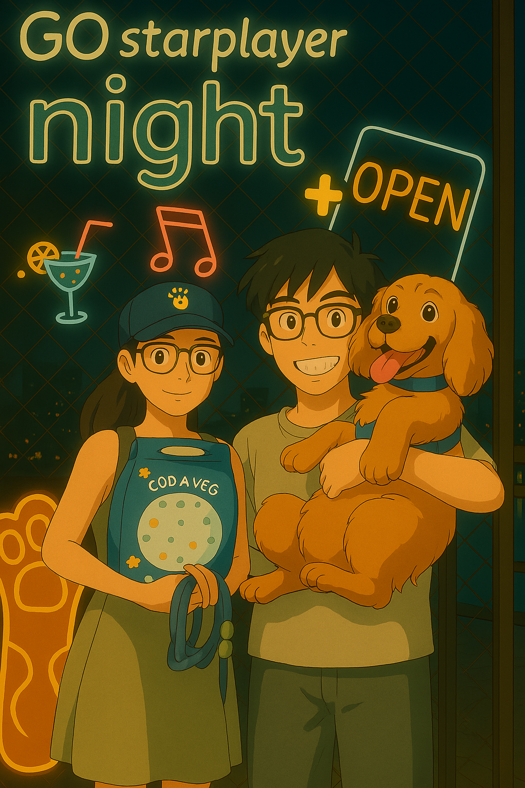
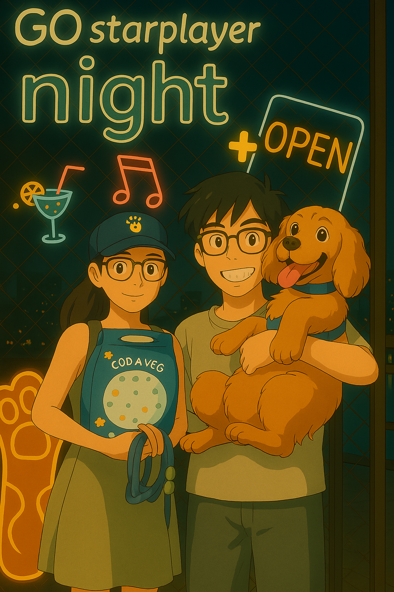
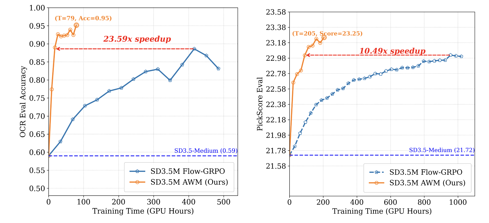

Chongjian GE 葛崇剑
Research Scientist at Adobe Research. My work focuses on Visual Generation Models. I received my Ph.D. from HKU in 2024, advised by Prof. Ping Luo. Previously a visiting student at UC Berkeley with Prof. Masayoshi Tomizuka.
We are actively hiring self-motivated interns at Adobe Research.
Publications



Honors
- CVPR Outstanding Reviewer 2023
- HKPFS Fellowship (HKU) 2020-24
- YS and Christabel Lung Scholarship 2020
Service
Conference Reviewer
Journal Reviewer